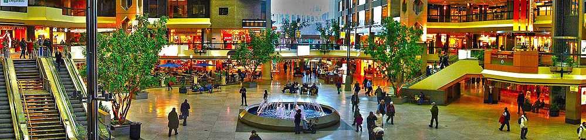

Au travail !28 octobre 2016
Voilà deux semaines que je travaille pour le compte des caisses Desjardins !
J'ai commencé à travailler le lundi 17 octobre, soit 10 jours après mon arrivée.
En résumé, beaucoup de changements !
Complexe Desjardins
Je travaille dans la tour sud du complexe Desjardins, en ensemble de 4 gratte-ciels. La tour sud est la plus grande des 4, il me semble qu'elle fait 40 étages ou un peu plus.
Un grand centre commercial sur plusieurs étages lie les 4 tours du complexe.
Il est également lié au métro et au fameux "RESO", c'est-à-dire les souterrains de Montréal. 33 kilomètres de tunnels sous terre, ce qui en fait le plus vaste réseau de souterrains au monde !
Premier jour au travail
Déjà, c'est immense, il a fallu trouver l'accès à la tour :)
Ensuite, une fois arrivé à bon port, au 11ème aux bureaux de ma ligne d'affaire, le CCC (Centre Contact Client), j'ai rencontré mon boss, qui m'a présenté à toute l'équipe, ainsi que ses attentes dans le cadre de ma mission.
Ça fait tout drôle d'être le petit nouveau, d'apprendre plein de nouveaux noms et visages !
Ensuite, j'ai pris possession de mon bureau (en open-space bien sûr) et de mon PC, et ai fait mes premières demandes administratives pour activer les accès aux différents outils. Premiers cafés avec des français, il y en a plein !
Le changement c'est maintenant
Je voulais du changement dans ma vie et au boulot, et bien me voilà servi pour les deux !
Mon travail n'a plus rien à voir, car je suis à présent Analyste-développeur, et non plus architecte technique.
Et ensuite et surtout le domaine est radicalement différent : celui des contacts clients, c'est-à-dire en résumé une plateforme qui met en relation les clients avec les conseillers Desjardins (cartes bancaires, assurance, et de nombreuses autres "lignes d'affaires"). C'est une énorme usine à gaz qui gère à peu près tout, sauf peut-être le café (mails, SMS, chat, téléphone : vous savez le fameux menu "tapez 1 pour ..." et qui vous dirige _ou pas_ vers un conseiller compétent).
Après 11 ans dans le même domaine, avec les mêmes technologies, les mêmes personnes, je suis passé violemment (on peut le dire) de l' "expert" qui connait plein de trucs, à ... le mec qui connait rien et qui doit tout réapprendre (même à taper au clavier, car ce sont des QWERTY) ! Intéressant, mais pas facile, d'autant que c'est très complexe et qu'il y a beaucoup d'acronymes (et je déteste ça :D).
Assez intéressant donc, mais à voir à plus long terme si ça me conviendra toujours, car c'est tout de même très spécialisé et loin de mon domaine initial !
No stress
Les collègues sont très sympathiques, l'ambiance est cool, les horaires... tranquilles ! A 16h30 pratiquement tout le monde est rentré ! :)
Alors certes, je commence plus tôt qu'en France (vers 8h30), et mange plus vite aussi (1 heure maximum ; fini les Sainte-Gé qui durent ! sniff).
Les horaires sont souples, et il est apparemment même possible de télé-travailler.
A première vue, ils sont beaucoup moins stressés et stressants qu'en France, ça va être une véritable cure de "zenittude" pour ma part !
...Ah, et ici, c'est l'inverse de la France : partir tard n'est pas bien perçu ! tu pourrais être vu comme quelqu'un de mal organisé ! là où en France on aurait tendance à faire le concours de celui qui part le plus tard possible pour "faire style que ouais j'ai plein de taf" (j'ai toujours détesté ça)
... Le saviez-vous ?
- On dit text pour texto / SMS, et du coup texter plutôt qu' "envoyer un SMS"
- On ne chat pas sur le net, mais on clavarde !
- Le navigateur web (Chrome, Firefox...) devient le fureteur
- Le matin quand on se croise, on dit "bon matin" (= good morning)
- La semaine calendaire commence le dimanche
- Les boissons s'appellent les breuvages
- Les liqueurs sont les boissons non alcoolisées (type coca) !